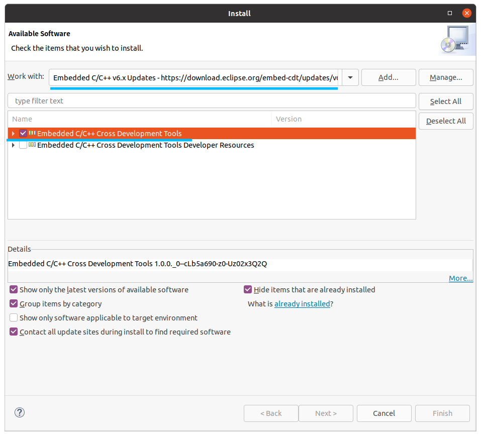
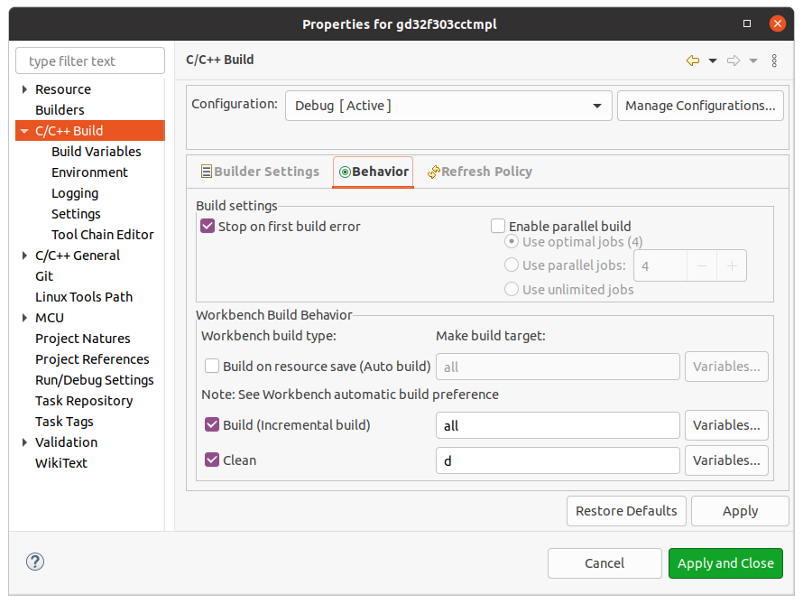
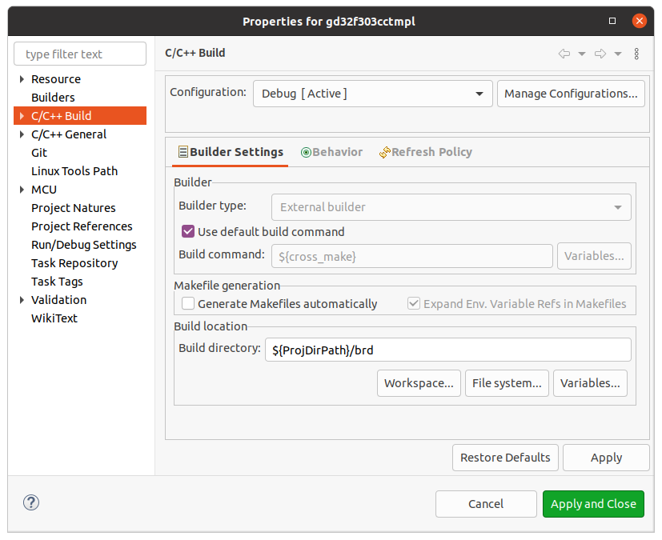
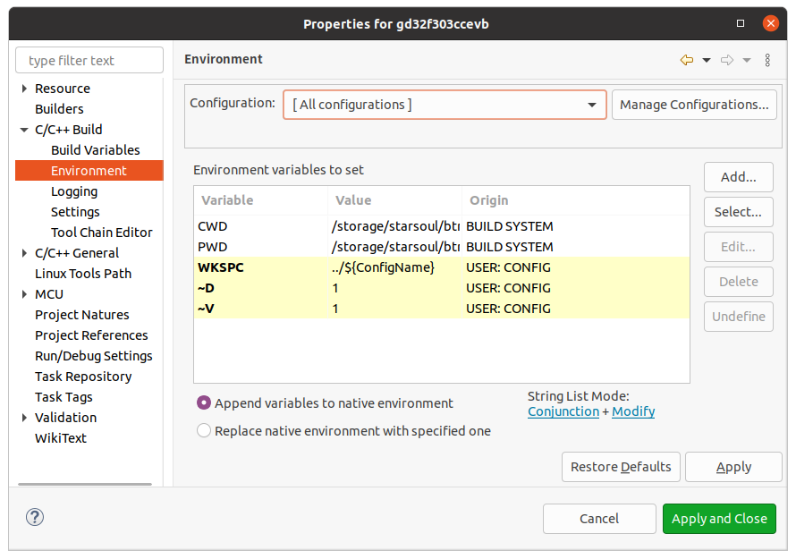
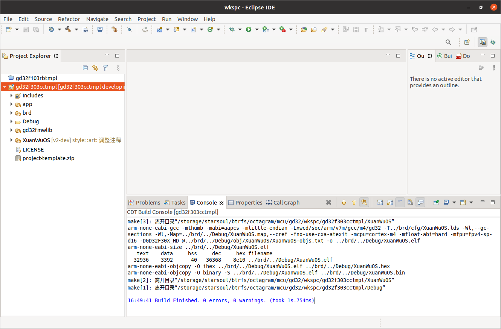
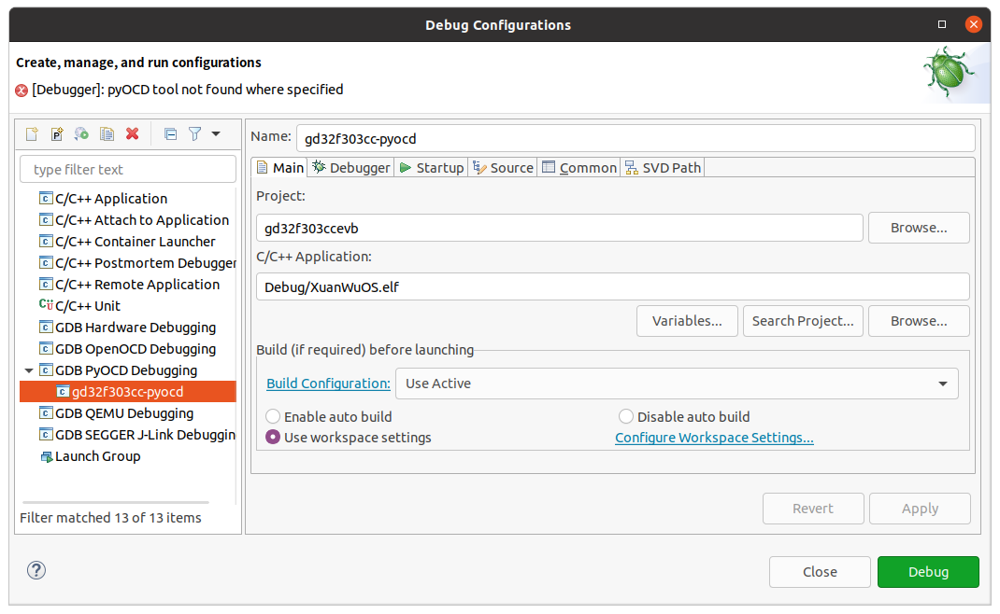
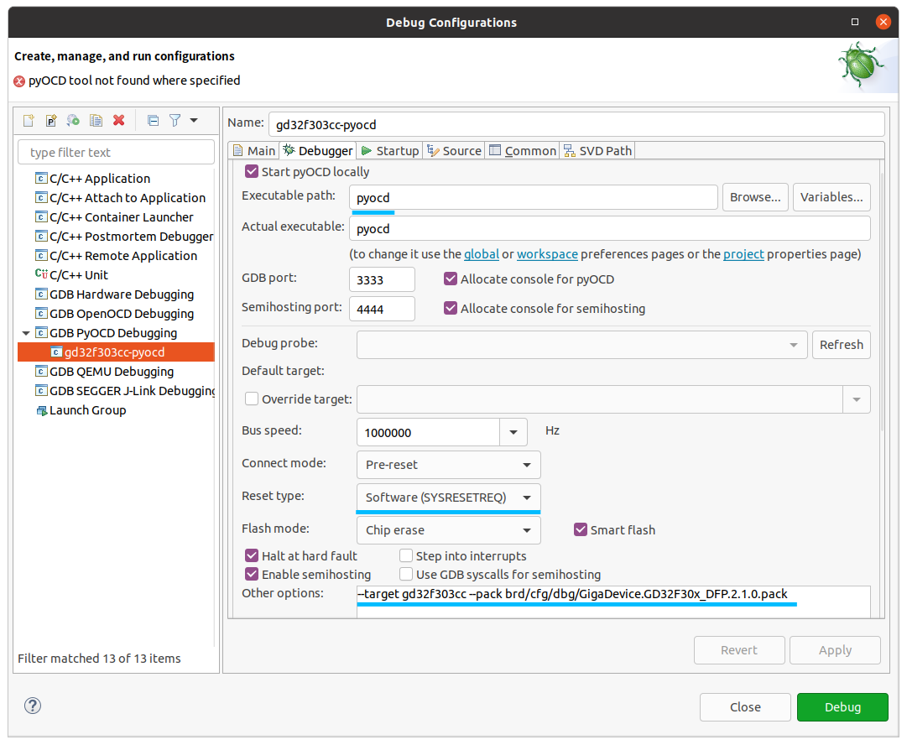
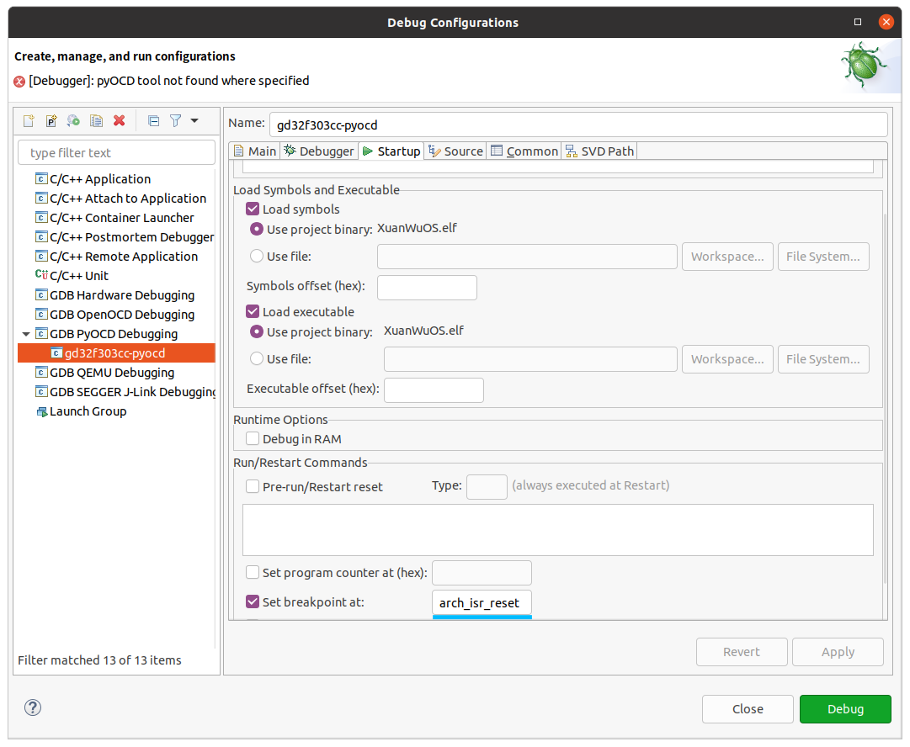

开发环境
GD32开发环境搭建指南
Categories:
2 分钟阅读
ubuntu-20.04
基本工具
参考用户手册-构建系统-编译环境设置安装工具链：
pyocd
- 用途：为gdb提供调试服务
- 安装方法
sudo apt install python3
pip3 install pyocd
IDE
安装IDE
安装插件
- 打开菜单"Help –> Install New Software…"；
- 选择"Embedded C/C++ v6.x Updates"，安装工具集：

创建工程
工程模板
- GD32F103
git clone --recursive https://gitee.com/xwos/GD32F103RBTmpl.git
- gd32f303
git clone --recursive https://gitee.com/xwos/GD32F303CCTmpl.git
- 在已有的仓库中同步代码
git pull
git submodule update
工程改名
若需要对工程改名，以GD32F103RBTmpl为例，应该在导入工程前修改以下内容：
- 文件夹名由
GD32F103RBTmpl改成新的工程名； - 文件
brd/cfg/XuanWuOS.h中，将XuanWuOS_CFG_BOARD的定义改成新的工程名； - 隐藏文件
.cproject中，将所有的GD32F103RBTmpl都替换成新的工程名； - 隐藏文件
.project中，将所有的GD32F103RBTmpl都替换成新的工程名； - 隐藏文件
.settings中，将所有文件中的所有的GD32F103RBTmpl都替换成新的工程名；
导入工程
菜单：File –> Import… –> General –> Projects from Folder or Archive
工程设置
编译设置
- 菜单：Project –> Properties
- Debug和Release两个配置都需要增加：


环境变量设置
- 菜单Project –> Properties –> C/C++ Build –> Environment。
- 点击Restore Defaults先恢复一次默认设置。
- 设置：
WKSPC:../${ConfigName}；~V:1；~D: Debug配置为1，Release配置为0。
- Debug和Release两个配置都需要增加。

修改芯片配置
模板中的默认芯片可能与用户的不一样，需要按实际情况进行修改。
brd/bdl/bdl.mk：根据芯片密度，修改定义。按照官方手册：- GD32F101xx和GD32F103xx的闪存存储器容量16K到128K字节之间的产品称作中密度产品，
需要修改成
-DGD32F10X_MD； - GD32F101xx和GD32F103xx的闪存存储器容量256K到512K字节之间的产品称作高密度产品，
需要修改成
-DGD32F10X_HD； - GD32F101xx和GD32F103xx的闪存存储器容量大于512K节的产品称作超高密度产品，
需要修改成
-DGD32F10X_XD； - GD32F105xx和GD32F107xx微控制器称作互联型产品，
需要修改成
-DGD32F10X_CL。
- GD32F101xx和GD32F103xx的闪存存储器容量16K到128K字节之间的产品称作中密度产品，
需要修改成
brd/cfg/XuanWuOS.lds：根据芯片的Flash与RAM情况，调整memory的参数：- 中断向量表、Image信息块以及代码区加起来不能超过Flash区域；
- 数据区、中断栈加起来不能超过RAM区域。
MEMORY {
flash_mr (rx): org = 0x08000000, len = 128k /* Flash的首地址与大小 */
ocram_mr (rwx): org = 0x20000000, len = 20k /* RAM的首地址与大小 */
/* 中断向量表 */
/* 将加载地址和运行地址配置为相同表示中断向量表不需要从Flash中拷贝到
内存 */
vctbl_lmr (rx): org = 0x08000000, len = 1024 /* 加载地址 */
vctbl_vmr (rw): org = 0x08000000, len = 1024 /* 运行地址 */
/* Image信息块 */
/* XWOS会在bin文件中增加一个数据块，记录Image的基本信息，
这一块信息放在中断向量表 */
image_description_mr (rx): org = 0x08000400, len = 1k /* image description */
/* 代码区 */
/* 所有的可执行代码 */
code_mr (rx): org = 0x08000800, len = 126k /* .xwos.vctbl &
.xwos.init.text &
.xwos.init.rodata &
.xwos.exit.text &
.xwos.exit.rodata &
.xwos.isr.text &
.xwos.text &
.xwos.rodata &
.text &
.rodata */
/* 数据区 */
/* 全局变量、栈、堆 */
data_mr (arw): org = 0x20000000, len = 18k /* .data, .bss & .heap */
/* 中断栈 */
/* 剩下的内存留给处理器执行中断函数时使用 */
xwos_stk_mr (rw): org = 0x20004800, len = 2k /* xwos stack */
}
编译工程

调试
设置DAPLink仿真器的访问权限
sudo gedit /etc/udev/rules.d/81-daplink.rules
输入下面内容后，保存退出。
ATTRS{idProduct}=="f001", ATTRS{idVendor}=="0d28", MODE="666"
ATTRS{idProduct}=="f002", ATTRS{idVendor}=="0d28", MODE="666"
ATTRS{idProduct}=="2722", ATTRS{idVendor}=="0d28", MODE="666"
ATTRS{idProduct}=="0204", ATTRS{idVendor}=="0d28", MODE="666"
重启系统或使用下面命令使得配置生效：
sudo udevadm control --reload
设置pyocd，使用DAPLink调试
- Main选择卡：选择工程，设置ELF文件。

- Debugger选择卡
- 需要设置pyocd与arm-none-eabi-gdb两个程序的路径，如果用户 是按照之前的指南安装环境，这两个程序可在系统路径中搜索到；
- 需要设定复位的方式，若仿真器与目标板之间由Reset连线，可选择Hardware，否则 选择Software(SYSRESETREQ)；
- 需要通过–pack选项为pyocd指定DFP的路径，DFP可在GD的官网中下载keil5 ADD-ON包找到，
下载后将其放在工程目录内，例如
brd/cfg/dbg/GigaDevice.GD32F10x_DFP.2.0.1.pack； - 通过–target选项为pyocd指定器件名称，例如：gd32f303cc、gd32f103rb、gd32F103ve等。

- Startup选择卡：可设置一个启动断点，通常设置为
arch_isr_reset或xwos_main。

重启调试
调试过程若需要复位系统，可以在右键菜单中选择Restart，操作方式如下：
- 按住复位按键；
- 在右键菜单中选择Restart；
- 释放复位按键。
增加官方Firmware Library
工程模板中已将官方的Firmware Library以OEM模块的形式集成：
- 模块路径：
gd32fmwlib - 编译规则：
gd32fmwlib/xwmo.mk - 编译开关：
OEMCFG_gd32fmwlib，定义在brd/cfg/oem.h文件中 - OEM模块也是玄武模块的一种
增加用户软件
工程模板中已经有一个名为app的OEM模块，用户可在其中增加自己的C代码，也可仿照
此模块建立其他的OEM模块：
- 模块路径：
app - 编译规则：
app/xwmo.mk - 编译开关：
OEMCFG_app，定义在brd/cfg/oem.h文件中 - OEM模块也是玄武模块的一种
最后修改 September 22, 2021: chore: :tada: 创建工程 —— 玄武操作系统网站 (9b7b6ed)